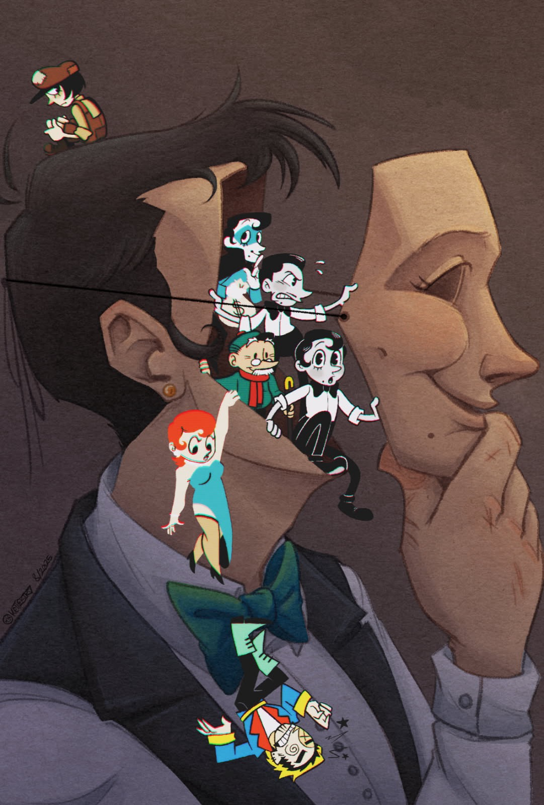
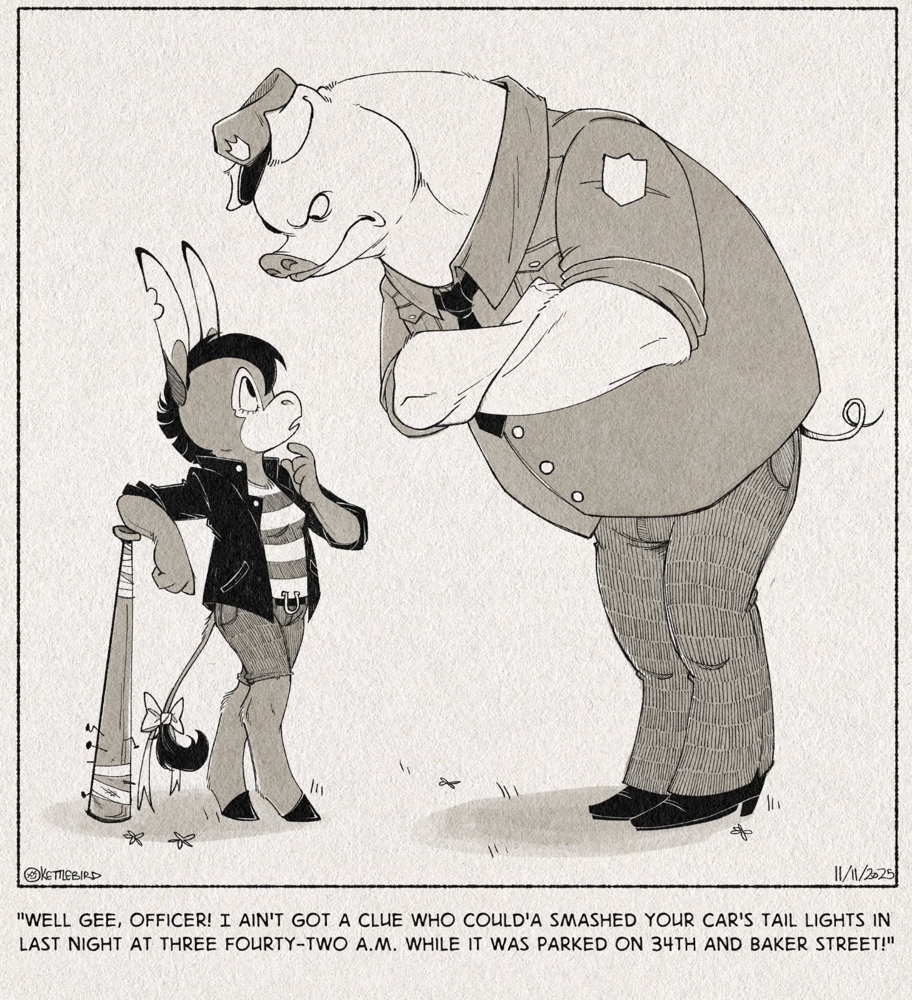
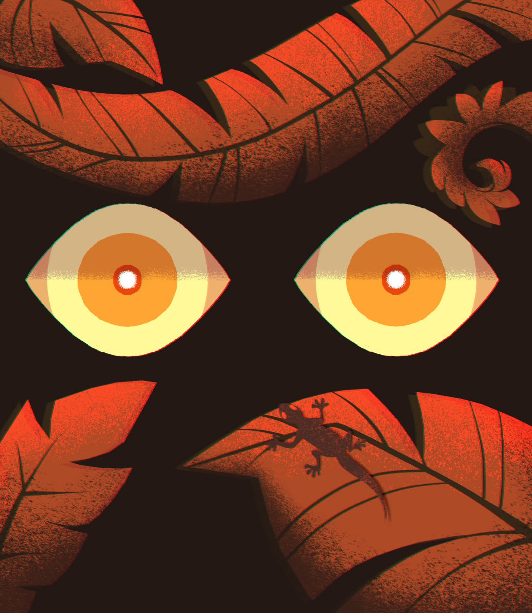

1. Laptop: a piece's dialog, with Full screen on its picture (focused)

Full screen
Night Market
Lanterns over the river stalls, for a zine about cities after dark.
original
digital
2. Phone: the dialog; Full screen is an icon button (named "Full screen") on the picture, and tapping the picture works too

Late Night Alibi
"Well gee, officer…" A one-panel gag.
original
gag
3. Laptop, full screen: the piece fits between the bars; title, "3 of 12 · Original Work", Close; Previous and Next at the sides; zoom below (Fit and − can't be used at 100%: dashed)
Night Market3 of 12 · Original Work✕ Close
PreviousNext
100%
4. Laptop, zoomed in to 340% where the fan clicked: drag (or Shift with the arrow keys) to move; the corner map shows where
Night Market3 of 12 · Original Work✕ Close
PreviousNext
340%
5. Phone, full screen (on an iPhone, Safari's own bars stay above and below this)
Late Night Alibi5 of 12✕
PreviousNext
100%
6. Phone, pinched in: a one-finger drag moves around the piece; it doesn't turn to the next
Late Night Alibi5 of 12✕
PreviousNext
300%
Drag: moves the piece
7. A tap on the piece hides the controls and the piece takes the whole screen; another tap brings them back
8. The first piece of its section: Previous can't be used; a screen reader hears the piece's title

Jungle Eyes1 of 12 · Original Work✕ Close
PreviousNext
100%
Screen reader: "Jungle Eyes, 1 of 12. Two glowing eyes between red leaves, and a gecko on one."
9. A phone held sideways: Previous and Next move to the sides; the piece fits between the bars, and a tap gives it the whole screen
Night Market6 of 12✕
PreviousNext
100%
10. After looking through to Jungle Eyes and choosing Close (or Escape): Jungle Eyes's dialog, with focus on Full screen
Full screen
Jungle Eyes
Two glowing eyes between red leaves, and a gecko on one.